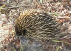
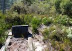
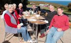
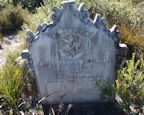
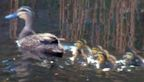

2012 Newsletters
If you would like to receive North Head Sanctuary Foundation newsletters via your email, just ask to be put on the mailing list by contacting:
northhead@fastmail.com.au

Weeding the oval
January/February 2012
World Wetlands Day Walk Feb 2; Official opening of Bandicoot Heaven; Weeding Day Feb 5; Planting Day Feb 16 4:30pm followed by General Meeting Feb 16 7pm; Weeding on oval Nov 2011; Third Cemetery; Dampiera Stricta.
March 2012
Signpost at Blue Fish Rd to North Head Sanctuary; Xanthorrhoea seedlings; Climate Watch Walk Mar 4; Planting Day Mar 11; Childcare Centre comments due; Fire in 1936; Third Cemetery - Alice Lawler; Themeda australis.

Echidna on North Head
April 2012
Weeding day 16th April; Café at North Fort to open 5th April; Eco awards for Mary Johnsen and Peter Nash; Climate Watch walks; Echidna; Fires on North Head in 1931; 3rd Cemetery - Richard W. Smith, Aseroe rubra.

Is it oil?
May 2012
Speaker - May 19 - Insects; bandicoot tracking; climate watch; 3rd Cemetery C.W.Smart; North Fort; Is it oil on the water?; Cassytha species.

Bubonic plague victim
June 2012
Funding for new research project; Author talk at Manly Art Gallery; Acacia suaveolens; Farewell from one of our volunteers; Planting Day in June; Walls of North Head; Third Cemetery - William James Harden.

Nursery group farewell
July 2012
AGM 7pm Aug 14; Memberships due; Spring Wildflower Walks; North Head Sanctuary Champions; Childcare Centre; Acacia myrtifolia; Climate Watch Walks; Third Cemetery - Joseph Franklin Jun; Farewell Sue.

James Miller Wilson
August 2012
AGM - speaker Fran Bodkin; Spring bushwalks; Patersonia sericea; a day in the life of a volunteer; Third Cemetery - James Miller Wilson, aged 7; volunteer to help with bandicoots; History 1933-5 - North Head designated as a wildflower garden but then needed for defence.

Duck family on hanging swamp
September 2012
Spring walks; Leucopogon ericoides; duck family on hanging swamp; The Bad Old Days; New commitee; Third Cemetery - John O'Neill; 1898 construction of sewer pipes and pathway from Manly to Shelly Beach.

Controlled burn
October 2012
Hazard reduction burns; whale watching; Hibbertia diffusa; Third Cemetery - Francis Jackson; research taking place after the burns.

Spring walk
November 2012
10yr celebration; Splendour of Spring; planting on the oval; Aunty Fran talk available online; North Fort Memorial dedication; Ocean Care Day; Blue Fish burn revelation; Calochilus; Third Cemetery - Chinese burial; echidna.

10 year celebration
December 2012
10 year celebration of North Head Sanctuary Foundation; Ocean Care Day; My North Head by Janet Fish; Third Cemetery - World War I returnees; Billardia scandens.